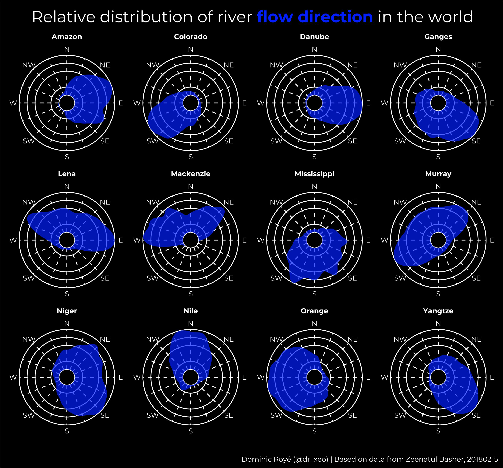

| Packages | Description |
|---|---|
| tidyverse | Collection of packages (visualization, manipulation): ggplot2, dplyr, purrr, etc. |
| remotes | Installation from remote repositories |
| qgisprocess | Interface between R and QGIS |
| sf | Simple Feature: import, export and manipulate vector data |
| ggtext | Improved text rendering support for ggplot2 |
| geomtextpath | ggplot2 extension for curved text on lines |
| circular | Functions for working with circular data |
| geosphere | Spherical trigonometry for geographic applications |
River flow directions

gis
R
R:advanced
river
directions
distribution
I recently created a visualization of the distribution of river flow directions and also of coastal orientations. Following its publication in social networks, I was asked to make a post about how I did it. Well, here we go to start with an example of rivers, coastal orientation is somewhat more complex. I did the same for a selection of European rivers here in this. However, originally I started with the orientation of the European coasts.

Packages
In this post we will use the following packages:
In the case of the qgisprocess package, it is necessary to install QIGS >= 3.16 here. I will explain the reason for using QGIS later.
# install the packages if necessary
if (!require("tidyverse")) install.packages("tidyverse")
if (!require("remotes")) install.packages("remotes")
if (!require("qgisprocess")) remotes::install_github("paleolimbot/qgisprocess")
if (!require("sf")) install.packages("sf")
if (!require("ggtext")) install.packages("ggtext")
if (!require("circular")) install.packages("circular")
if (!require("geosphere")) install.packages("geosphere")
if (!require("geomtextpath")) install.packages("geomtextpath")
# packages
library(sf)
library(tidyverse)
library(ggtext)
library(circular)
library(geosphere)
library(qgisprocess)
library(geomtextpath)Initial considerations
Angles in vectorial lines are based on the angle between two vertices, and the number of vertices depends on the complexity, and therefore the resolution, of the vector data. Consequently, there can be differences in using different resolutions of a spatial line, either from the coast or from the river as in this example. A straight line is simply constructed with two points of longitude and latitude.
Related to this is fractality, an apparently irregular structure but that is repeated at different scales, known from coastlines or also from river. The most paradoxical feature is that the length of a coastline depends on the measurement scale, the smaller the measurement increment, the longer is the measured coastline.
There are two possibilities of obtaining the vertice angles. In the first one we calculate the angle between all consecutive vertices.
For example, imagine two points, Madrid (-3.71, 40.43) and Barcelona (2.14, 41.4).
What is the angle of a straight line between both cities?
bearingRhumb(c(-3.71, 40.43), c(2.14, 41.4))[1] 77.62391We see that it is 77º, that is, northeast direction. But what if we go from Barcelona to Madrid?
bearingRhumb(c(2.14, 41.4), c(-3.71, 40.43))[1] 257.6239The angle is different because we move from the northeast to the southwest. We can easily invert the direction to get the opposite angle.
# opposite angle of Barcelona -> Madrid
bearingRhumb(c(2.14, 41.4), c(-3.71, 40.43)) - 180[1] 77.62391# opposite angle of Madrid -> Barcelona
bearingRhumb(c(-3.71, 40.43), c(2.14, 41.4)) + 180[1] 257.6239The direction in which we calculate the angles is important. In the case of rivers, it is expected to be the direction of flow from origin to the mouth, however, a problem may be that the vertices, which build the lines, are not geographically ordered in the attribute table. Another problem may be that the vertices start at the mouth which would give the reverse angle as we have seen before.
However, there is an easier way. We can take advantage of the attributes of projected coordinate systems (Robinson projection, etc.) that include the angle between the vertices. We will use this last approach in this post. Still, we must pay close attention to the results as stated above.
Preparation
Data
We download the central lines of the largest rivers in the world (here), also accessible in Zeenatul Basher et al. 2018.
Import and project
The first thing we do is to import, project the spatial lines and delete the third dimension Z, chaining the following functions: st_read() helps us import any vector format, st_zm() delete the dimension Z or M of a geometry and st_transform() projects the vector data to the new projection in proj4 format. We combine the functions with the famous pipe (|>) that facilitates the application of a sequence of functions on a data set. All functions in the sf package start with st_* with reference to the spatial character, similar to PostGIS. In the same style as PostGIS, verbs are used as function names.
proj_rob <- "ESRI:54030"
river_line <- st_read("RiverHRCenterlinesCombo.shp") |>
st_zm() |>
st_transform(proj_rob)Reading layer `RiverHRCenterlinesCombo' from data source
`C:\Users\xeo19\Downloads\dominicroye.github.io\blog\river-flow-directions\RiverHRCenterlinesCombo.shp'
using driver `ESRI Shapefile'
Simple feature collection with 78 features and 6 fields
Geometry type: MULTILINESTRING
Dimension: XY, XYZ
Bounding box: xmin: -164.7059 ymin: -36.97094 xmax: 151.5931 ymax: 72.64474
z_range: zmin: 0 zmax: 0
Geodetic CRS: WGS 84Extract the angles
In the next step we have to extract the vertice angles. Unfortunately, as far as I know, it is not possible to extract the attributes with some function from the sf package. Although the function st_coordinates() returns the coordinates, it does not include other attributes. Therefore, we must use another way, and that is the open software Quantum GIS in which we can find a tool to extract all the vertice attributes. We could import the vector data into QGIS Desktop and export the vertices from there, but it is also possible to access the QGIS tools from R directly.
For this, we need to have QGIS installed. The qgisprocess package allows us to use very easily all the tools of the software in R. First we use the qgis_configure() function to define all the necessary QGIS paths.
# paths to QGIS
qgis_configure()getOption('qgisprocess.path') was not found.Sys.getenv('R_QGISPROCESS_PATH') was not found.Trying 'qgis_process' on PATH...'qgis_process' is not available on PATH.Found 2 QGIS installations containing 'qgis_process':
C:/Program Files/QGIS 3.34.2/bin/qgis_process-qgis.bat
C:/Program Files/QGIS 3.34.0/bin/qgis_process-qgis.batTrying command 'C:/Program Files/QGIS 3.34.2/bin/qgis_process-qgis.bat'Success!Now using 'qgis_process' at 'C:/Program Files/QGIS 3.34.2/bin/qgis_process-qgis.bat'.>>> If you need another installed QGIS instance, run `qgis_configure()`;
see `?qgis_configure` if you need to preset the path of 'qgis_process'.QGIS version is now set to: 3.34.2-PrizrenUsing JSON for output serialization.Using JSON for input serialization.
Standard error message from 'qgis_process':
Problem with GRASS installation: GRASS was not found or is not correctly installed2 out of 3 available processing provider plugins are enabled.
Standard error message from 'qgis_process':
Problem with GRASS installation: GRASS was not found or is not correctly installedYou now have access to 376 algorithms from 5 QGIS processing providers.>>> Run `qgis_enable_plugins()` to enable 1 disabled plugin and access
its algorithms: otbprovider
Saving configuration to 'C:\Users\xeo19\AppData\Local\R-qgisprocess\R-qgisprocess\Cache/cache-0.4.1.rds'Use qgis_algorithms(), qgis_providers(), qgis_plugins(), qgis_path() and
qgis_version() to inspect the cache environment.The qgis_algorithms() function helps us to search for different QGIS tools. In addition the qgis_show_help() function specifies the way of usage with all the required parameters.
# search tools
qgis_algorithms()# A tibble: 376 × 24
provider provider_title algorithm algorithm_id algorithm_title
<chr> <chr> <chr> <chr> <chr>
1 3d QGIS (3D) 3d:tessellate tessellate Tessellate
2 gdal GDAL gdal:aspect aspect Aspect
3 gdal GDAL gdal:assignprojection assignproje… Assign project…
4 gdal GDAL gdal:buffervectors buffervecto… Buffer vectors
5 gdal GDAL gdal:buildvirtualraster buildvirtua… Build virtual …
6 gdal GDAL gdal:buildvirtualvector buildvirtua… Build virtual …
7 gdal GDAL gdal:cliprasterbyextent cliprasterb… Clip raster by…
8 gdal GDAL gdal:cliprasterbymaskla… cliprasterb… Clip raster by…
9 gdal GDAL gdal:clipvectorbyextent clipvectorb… Clip vector by…
10 gdal GDAL gdal:clipvectorbypolygon clipvectorb… Clip vector by…
# ℹ 366 more rows
# ℹ 19 more variables: provider_can_be_activated <lgl>,
# provider_is_active <lgl>, provider_long_name <chr>, provider_version <chr>,
# provider_warning <chr>, can_cancel <lgl>, deprecated <lgl>, group <chr>,
# has_known_issues <lgl>, help_url <chr>, requires_matching_crs <lgl>,
# short_description <chr>, tags <list>, default_raster_file_extension <chr>,
# default_vector_file_extension <chr>, …# usage of tool
qgis_show_help("native:extractvertices")Extract vertices (native:extractvertices)
----------------
Description
----------------
This algorithm takes a line or polygon layer and generates a point layer with points representing the vertices in the input lines or polygons. The attributes associated to each point are the same ones associated to the line or polygon that the point belongs to.
Additional fields are added to the point indicating the vertex index (beginning at 0), the vertexs part and its index within the part (as well as its ring for polygons), distance along original geometry and bisector angle of vertex for original geometry.
----------------
Arguments
----------------
INPUT: Input layer
Argument type: source
Acceptable values:
- Path to a vector layer
OUTPUT: Vertices
Argument type: sink
Acceptable values:
- Path for new vector layer
----------------
Outputs
----------------
OUTPUT: <outputVector>
VerticesIn our case the tool to extract the vertices is simple and only has one input and one output. The function qgis_run_algorithm() executes a QGIS tool indicating the algorithm and its arguments. The advantage of using the algorithm directly from R is that we can pass objects of class sf (or sp) and raster that we have imported or created in R. As output we create a geojson, it could also be of another vector format, and we save it in a temporary folder. To obtain the QGIS output we need to use qgis_extract_output() function.
river_vertices <- qgis_run_algorithm(
alg = "native:extractvertices",
INPUT = river_line,
OUTPUT = file.path(tempdir(), "rivers_world_vertices.geojson")
)
river_vertices <- st_read(qgis_extract_output(river_vertices, "OUTPUT"))Reading layer `rivers_world_vertices' from data source
`C:\Users\xeo19\AppData\Local\Temp\RtmpSIybwj\rivers_world_vertices.geojson'
using driver `GeoJSON'
Simple feature collection with 339734 features and 12 fields
Geometry type: POINT
Dimension: XY
Bounding box: xmin: -12117400 ymin: -3953778 xmax: 13751910 ymax: 7507359
Projected CRS: World_RobinsonSelection
Before continuing with the distribution estimation of the angles, we filter some rivers of interest. The functions of the tidyverse collection are compatible with the sf package. In the last post I made an introduction to tidyverse here.
river_vertices <- filter(
river_vertices,
NAME %in% c(
"Mississippi", "Colorado",
"Amazon", "Nile", "Orange",
"Ganges", "Yangtze", "Danube",
"Mackenzie", "Lena", "Murray",
"Niger"
)
)
river_verticesSimple feature collection with 94702 features and 12 fields
Geometry type: POINT
Dimension: XY
Bounding box: xmin: -10377520 ymin: -3953778 xmax: 13124340 ymax: 7507359
Projected CRS: World_Robinson
First 10 features:
fid NAME SYSTEM name_alt scalerank rivernum Length_km vertex_index
1 6 Nile <NA> <NA> 1 4 3343.871 0
2 6 Nile <NA> <NA> 1 4 3343.871 1
3 6 Nile <NA> <NA> 1 4 3343.871 2
4 6 Nile <NA> <NA> 1 4 3343.871 3
5 6 Nile <NA> <NA> 1 4 3343.871 4
6 6 Nile <NA> <NA> 1 4 3343.871 5
7 6 Nile <NA> <NA> 1 4 3343.871 6
8 6 Nile <NA> <NA> 1 4 3343.871 7
9 6 Nile <NA> <NA> 1 4 3343.871 8
10 6 Nile <NA> <NA> 1 4 3343.871 9
vertex_part vertex_part_index distance angle geometry
1 0 0 0.000 31.096005 POINT (3037149 1672482)
2 0 1 1208.130 22.456672 POINT (3037772 1673517)
3 0 2 2324.160 8.602259 POINT (3038039 1674600)
4 0 3 3656.452 8.573580 POINT (3038118 1675930)
5 0 4 5735.538 24.406889 POINT (3038612 1677950)
6 0 5 6758.322 25.134763 POINT (3039200 1678787)
7 0 6 10432.834 6.998982 POINT (3040164 1682333)
8 0 7 14865.136 4.239641 POINT (3040070 1686764)
9 0 8 16563.207 358.730530 POINT (3040356 1688438)
10 0 9 18376.526 347.480822 POINT (3039972 1690210)Estimate the distribution
To visualize the distribution we can use either a histogram or a density graph. But in the case of estimating the probability density function, we find a mathematical problem when applying it to circular data. For circular data we should not use the density() standard function of R since in our data a direction of 360º is the same at 0º, which would cause errors in this range of values. It is a general problem for different statistical metrics. More statistical details are explained in the circular package. This package allows you to define the characteristics of circular data (unit, data type, rotation, etc.) as an object class in R.
So what we do is to build a function that estimates the density and returns a table with the angles (x) and the density estimates (y). Since rivers have different lengths, and we want to see differences regardless of that, we normalize the estimates using the maximum value. Unlike the density() function, in which the smoothing bandwidth bw is optimized, here it is required to indicate it manually. It is similar to defining the bar width in a histogram. There is an optimization function for the bandwidth, bw.nrd.circular() that could be used here.
dens_circ <- function(x) {
dens <- density.circular(circular(x$angle, units = "degrees"),
bw = 70, kernel = "vonmises",
control.circular = list(units = "degrees")
)
df <- data.frame(x = dens$x, y = dens$y / max(dens$y))
return(df)
}Finally, we estimate the density of each river in our selection. We use the split() function of R Base to get a table of each river in a list object. Then we apply our density estimation function to the list with the function map_df() from the purrr package. The suffix _df allows us to get a joined table, instead of a list with the results of each river. However, it is necessary to indicate the name of the column with the argument .id, which will contain the name of each river. Otherwise we would not know how to differentiate the results. Also here I recommend reading more details in the last post about tidyverse here.
dens_river <- split(river_vertices, river_vertices$NAME) |>
map_df(dens_circ, .id = "river")
# results
head(dens_river) river x y
1 Amazon 0.000000 0.2399907
2 Amazon 0.704501 0.2492548
3 Amazon 1.409002 0.2585758
4 Amazon 2.113503 0.2679779
5 Amazon 2.818004 0.2774859
6 Amazon 3.522505 0.2871232Visualization
In the next step we create two objects with the title and the plot caption. In the title we are using an html code to color part of the text instead of a legend. You can use html very easily with the ggtext package.
# title with html
title <- "Relative distribution of river <span style='color:#011FFD;'><strong>flow direction</strong></span> in the world"
caption <- "Based on data from Zeenatul Basher, 20180215"The background grid that creates ggplot by default for polar coordinates did not convince me, so we create a table with x axis background lines.
grid_x <- tibble(
x = seq(0, 360 - 22.5, by = 22.5),
y = rep(0, 16),
xend = seq(0, 360 - 22.5, by = 22.5),
yend = rep(Inf, 16)
)Next we define all the styles of the graph. The most important thing in this step is the element_textbox() function of the ggtext package to be able to interpret our html code incorporated into the title.
theme_polar <- function() {
theme_minimal(base_family = "Montserrat") %+replace%
theme(
axis.title.y = element_blank(),
axis.text.y = element_blank(),
legend.title = element_blank(),
plot.title = element_textbox(
hjust = 0.5,
colour = "white",
size = 18,
margin = margin(t = 10, b = 15)
),
plot.caption = element_text(
colour = "white"
),
axis.text.x = element_text(
colour = "white",
margin = margin(b = 2)
),
strip.text = element_text(
colour = "white",
face = "bold"
),
panel.background = element_rect(fill = "black"),
plot.background = element_rect(fill = "black"),
panel.grid = element_blank()
)
}Finally we build the graph: 1) We use the geom_hline() function with different y intersection points to create the background grid. The geom_segment() function creates the x grid. 2) We create the density area using the geom_area() function. 3) In scale_x_continous() we define a negative lower limit so that it does not collapse at a small point. The labels of the eight main directions are indicated in the scale_y_continous() function, and 4) Finally, we change to a polar coordinate system and set the variable to create facets.
ggplot() +
geom_hline(yintercept = c(0, .2, .4, .6, .8, 1),
colour = "white",
linewidth = .4) +
geom_segment(
data = grid_x,
aes(
x = x,
y = y,
xend = xend,
yend = yend
),
linetype = "dashed",
colour = "white",
linewidth = .2
) +
geom_area(
data = dens_river,
aes(x = x, y = y, ymin = 0, ymax = y),
alpha = .7,
colour = NA,
show.legend = FALSE,
fill = "#011FFD"
) +
scale_y_continuous(limits = c(-.2, 1), expand = expansion(0)) +
scale_x_continuous(
limits = c(0, 360),
breaks = seq(0, 360 - 22.5, by = 22.5*2),
minor_breaks = NULL,
labels = c(
"N", "NE", "E", "SE",
"S", "SW", "W", "NW"
)
) +
coord_curvedpolar(direction = -1) +
facet_wrap(river ~ ., ncol = 4) +
labs(title = title, caption = caption, x = NULL) +
theme_polar(){kind=link}
River flow directions River flow directions River flow directions Dr Dominic Royé I recently created a visualization of the distribution of river flow directions and also of coastal orientations. Following its publication in social networks, I was asked to make a post about how I did it. Well, here we go to start with an example of rivers, coastal orientation is somewhat more complex. I recently created a visualization of the distribution of river flow directions and also of coastal orientations. Following its publication in social networks, I was asked to make a post about how I did it. Well, here we go to start with an example of rivers, coastal orientation is somewhat more complex.